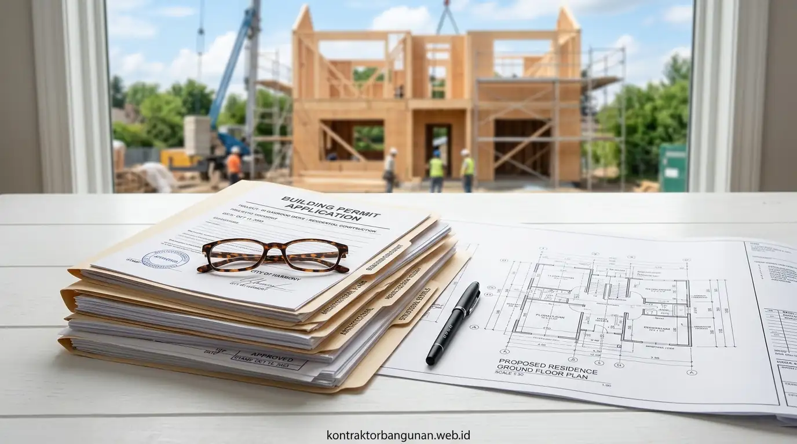

Berapa Perbandingan Kecepatan Proses PBG Mandiri Dibanding Konsultan Profesional?
Pengurusan PBG menggunakan jasa profesional jauh lebih cepat karena tim ahli telah menguasai penyusunan gambar teknis berstandar SIMBG serta prosedur sidang persetujuan dinas.
Secara teknis, perbandingan alur dan durasi pengerjaan antara pengurusan mandiri dan penggunaan jasa profesional terurai secara transparan:
| Indikator Evaluasi | Mengurus PBG Sendiri (Mandiri) | Menggunakan Konsultan / Pakai Jasa |
|---|---|---|
| Durasi Penerbitan Izin | 45 - 90 Hari Kerja | 14 - 21 Hari Kerja |
| Penyusunan Gambar Teknis | Risiko revisi tinggi jika dibuat tanpa SIPB/SKA | Dikerjakan langsung oleh Arsitek & Insinyur Berlisensi |
| Kelolosan Sidang TABG | Berpotensi sidang ulang berulang kali | Proses konsultasi sidang berlangsung lebih efisien |
| Risiko Penolakan Berkas | Tinggi (Akibat kelengkapan administratif/teknis) | Sangat Rendah (Verifikasi internal sebelum upload) |
| Efisiensi Total Anggaran | Berpotensi membengkak akibat keterlambatan proyek | Biaya terukur dan terikat dalam kontrak kerja resmi |
Tabel evaluasi komparatif pengurusan perizinan PBG mandiri vs konsultan profesional di Indonesia.
Kesenjangan waktu yang signifikan ini menjadikannya faktor komersial utama dalam menentukan skema pengurusan perizinan konstruksi Anda. Penundaan izin selama 2 hingga 3 bulan berimplikasi langsung pada inflasi harga material bangunan, perpanjangan sewa alat berat, serta terhentinya jadwal mobilisasi tukang di lapangan.
- Evaluasi Kementerian PUPR pada portal SIMBG periode 2025/2026 mencatat 68% berkas mandiri ditolak pada tahap verifikasi kelengkapan DED karena tidak menyertakan kalkulasi gempa berbasis SNI 1726:2019.
- Dengan konsultan berlisensi, waktu verifikasi dokumen dapat dipersingkat menjadi 5 hingga 10 hari kerja berkat kesiapan data teknis yang memenuhi syarat baku dinas terkait.
Tahapan Teknis Apa Saja yang Paling Sering Menghambat Pengurusan PBG di SIMBG?
Fase verifikasi dokumen teknis dan sidang konsultasi Tim Ahli Bangunan Gedung (TABG) merupakan dua tahap kritis yang paling banyak memicu penundaan penerbitan PBG.
Beberapa kendala utama saat mengajukan PBG melalui SIMBG meliputi:
- Ketidaksesuaian Informasi Rencana Detail Tata Ruang (RDTR): Perbedaan tata guna lahan antara dokumen Pertimbangan Teknis Pertanahan (PTP), Keterangan Rencana Kota (KRK), dan desain denah arsitektur. Jika koefisien dasar bangunan (KDB) melampaui batas zona, sistem akan langsung menolak dokumen.
- Gambar Struktur yang Tidak Memenuhi Kuat Tekan Minimum: Tidak adanya kalkulasi pembebanan struktur beton bertulang dan analisa geoteknik tanah yang disahkan oleh Insinyur Sipil pemegang Sertifikat Keahlian (SKA/STRA) aktif.
- Dokumen Hasil Analisis Dampak Lalu Lintas dan Lingkungan: Belum dilengkapinya dokumen Amdal/UKL-UPL dan Rekomendasi Andalalin untuk bangunan fungsi usaha, komersial, gudang, maupun fasilitas umum bertingkat.
- Gambar Mekanikal, Elektrikal, dan Plambing (MEP) Tidak Sinkron: Skema jalur pipa air bersih, sanitasi air kotor, sistem proteksi kebakaran (hydrant/sprinkler), serta diagram panel listrik yang tidak terintegrasi dengan gambar arsitektur.

Penyusunan berkas perizinan resmi, gambar teknis DED, dan pemodelan struktur bangunan berstandar SIMBG.
Mengapa Kontraktor Bangunan Menjadi Mitra Terbaik Pengurusan PBG dan Konstruksi?
Menyerahkan proses perizinan sekaligus eksekusi fisik kepada Kontraktor Bangunan memastikan legalitas PBG terbit secara tepat waktu tanpa mengganggu jadwal pengerjaan proyek.
Penyedia jasa konstruksi terintegrasi menyajikan keunggulan operasional komersial:
- Jaminan Dokumen Berlisensi: Gambar rencana dibuat dan dilegalisasi langsung oleh penanggung jawab arsitektur dan struktur yang memiliki Sertifikat Keahlian resmi (STRA & SKA HAKI/IAI).
- Efisiensi Rantai Kerja: Pengurusan PBG berjalan secara paralel dengan penyusunan Rencana Anggaran Biaya (RAB), pengadaan material, dan persiapan lahan (land clearing).
- Kepastian Biaya Retribusi: Bebas dari biaya tersembunyi karena kalkulasi nilai retribusi daerah dihitung transparan menggunakan rumus Indeks Terintegrasi SIMBG sejak awal pengajuan.
- Kesiapan Menuju Sertifikat Laik Fungsi (SLF): Pengawasan konstruksi dilakukan sesuai gambar PBG yang telah disetujui, mempermudah penerbitan SLF saat bangunan selesai didirikan.
Pastikan proyek pembangunan hunian maupun gedung bisnis Anda berjalan legal dan bebas kendala administrasi. Konsultasikan kebutuhan pengurusan PBG serta perencanaan fisik Anda bersama tim Kontraktor Bangunan terpercaya sekarang!
Apa Saja Kesalahan Fatal dalam Pengurusan PBG yang Harus Diindari?
Kesalahan paling mendasar adalah memulai pengerjaan fisik bangunan sebelum dokumen PBG dan Sertifikat Laik Fungsi (SLF) diterbitkan secara resmi oleh dinas terkait.
Beberapa risiko hukum dan finansial jika salah mengambil langkah perizinan:
- ❌ Penghentian Sementara Pekerjaan Fisik: Satuan Polisi Pamong Praja (Satpol PP) atau Dinas PUPR setempat berhak menyegel lokasi proyek yang belum memasang plang nomor register PBG valid.
- ❌ Denda Administratif Konstruksi: Pengenaan denda operasional sebesar maksimal 10% dari nilai total bangunan yang sedang didirikan sesuai PP No. 16 Tahun 2021.
- ❌ Pembongkaran Bangunan Paksa: Risiko pembongkaran struktur jika fisik yang dibangun melanggar Garis Sempadan Bangunan (GSB), Garis Sempadan Sungai (GSS), atau Ruang Terbuka Hijau (RTH).
- ❌ Kendala Transaksi Finansial & Utilitas: Bangunan tanpa PBG tidak dapat dijadikan agunan bank, tidak bisa diterbitkan sertifikat SLF, serta terhambat dalam penyambungan listrik industri/PDAM.
FAQ seputar Perbandingan Pengurusan PBG
Kesimpulan Praktis
Membandingkan jasa urus PBG sendiri vs pakai jasa membuktikan bahwa penggunaan konsultan profesional menyajikan kecepatan dan kepastian hukum yang unggul. Menghindari kerumitan birokrasi teknis membebaskan Anda untuk fokus pada pengembangan aset properti secara optimal.
Amankan legalitas bangunan dan percepat eksekusi proyek Anda tanpa hambatan birokrasi. Segera hubungi tim Kontraktor Bangunan kami untuk layanan pengurusan perizinan PBG serta pembangunan fisik terpercaya!